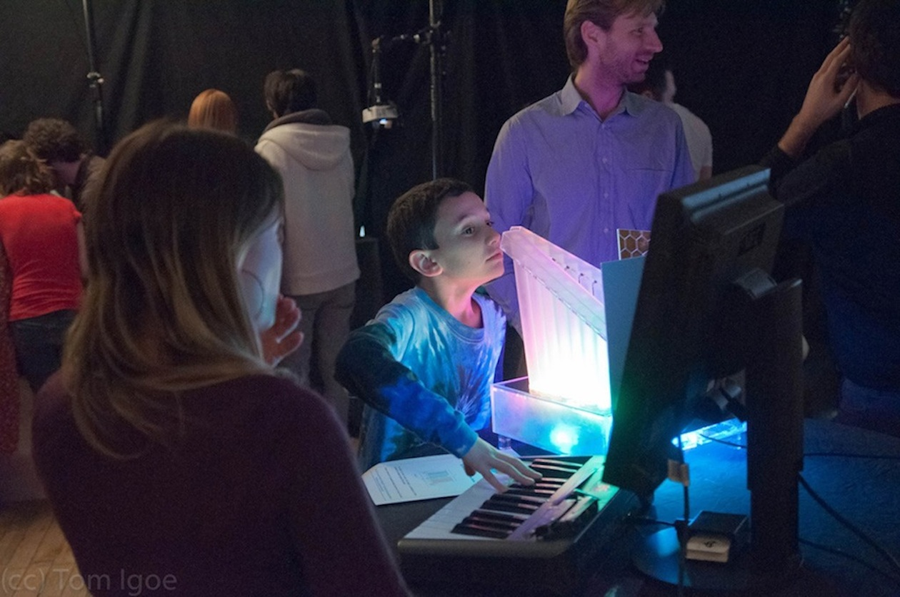

<!DOCTYPE html>
<html>

<head>
	<meta charset='UTF-8' />
	
	<title>ITP Shanghai</title>
	
<!--
	<link rel='stylesheet' href='css/bootstrap/css/bootstrap.css' />
	<link href='css/bootstrap/css/bootstrap-responsive.css' rel="stylesheet">
-->

	<link rel='stylesheet' href='css/style.css' />
	
	<!--[if IE]>
		<script src="http://html5shiv.googlecode.com/svn/trunk/html5.js"></script>
	<![endif]-->

	<script src='http://ajax.googleapis.com/ajax/libs/jquery/1.4/jquery.min.js'></script>
	<script src='js/example.js'></script>
	
	    <!-- Le fav and touch icons -->
    <link rel="shortcut icon" href="twitter-bootstrap-v2/docs/examples/images/favicon.ico">
    <link rel="apple-touch-icon" href="twitter-bootstrap-v2/docs/examples/images/apple-touch-icon.png">
    <link rel="apple-touch-icon" sizes="72x72" href="twitter-bootstrap-v2/docs/examples/images/apple-touch-icon-72x72.png">
    <link rel="apple-touch-icon" sizes="114x114" href="twitter-bootstrap-v2/docs/examples/images/apple-touch-icon-114x114.png">
	
</head>

<body>

<!--
	<div id="BGImage">
		
	</div>
	 
-->

<div class="white-box"> </div>

</body>
</html>

